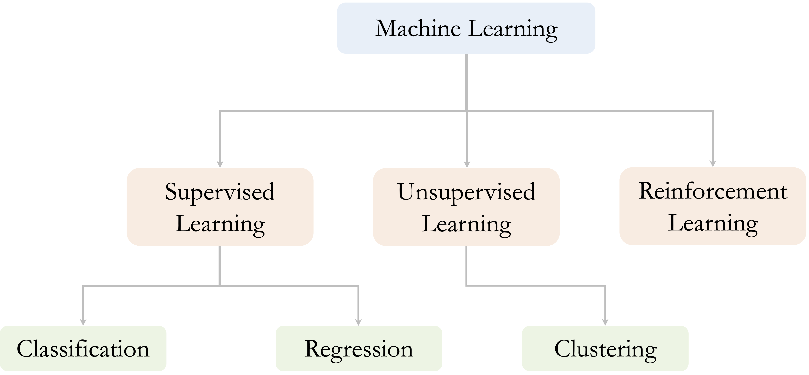

2 Foundations of Data Science and Machine Learning
How does Netflix know what you want to watch, or how can a hospital predict patient risk before symptoms appear? Behind these intelligent systems lies the power of data science and machine learning. This chapter offers your entry point into that world, even if you have never written a line of code or studied statistics before.
Whether your background is in business, science, the humanities, or none of the above, this chapter is designed to be both accessible and practical. Through real-world examples, visual explanations, and hands-on exercises, you will explore how data science projects progress from raw data to meaningful insights, understand where machine learning fits in, and see why these tools are essential in today’s data-driven world.
Data science is a fast-moving, interdisciplinary field that integrates computational, statistical, and analytical techniques to extract insights from data. In today’s economy, data has become one of the world’s most valuable assets, often referred to as the “new oil”, for its power to fuel innovation and transform decision-making.
Data science unleashes this potential by turning raw information into actionable knowledge. It draws on machine learning, programming, statistical modeling, and domain expertise to help organizations make evidence-based decisions, improve operations, anticipate trends, and build adaptive, intelligent systems. These capabilities are already transforming industries, including personalized healthcare and financial forecasting to targeted marketing and autonomous vehicles.
As the demand for data-driven solutions continues to grow, understanding the foundations of data science, and its deep connection to machine learning, has never been more important. This chapter introduces the core concepts, explores their societal relevance, and presents a structured workflow that guides data science projects from raw data to real impact.
While data science encompasses a wide variety of data types, including images, video, audio, and text, this book focuses on applications involving structured, tabular data. These are datasets commonly found in spreadsheets, relational databases, and logs. More complex forms of unstructured data analysis, such as computer vision or natural language processing, lie beyond the scope of this volume.
What This Chapter Covers
This chapter lays the groundwork for your journey into data science and machine learning. You will start by exploring what data science is, why it matters across diverse fields, and how it transforms raw data into real-world impact. You will then learn how data science projects are structured using a practical workflow that guides you from defining the problem to deploying a solution.
As the chapter progresses, you will gain insight into the role of machine learning as the modeling engine of data science. We break down its three main branches, supervised, unsupervised, and reinforcement learning, highlighting how they differ and where each is applied.
By the end of this chapter, you will have a high-level roadmap of how data science works in practice, what kinds of problems it can solve, and how the rest of this book will help you build and evaluate machine learning models with confidence. While this chapter offers a broad overview, the detailed methods, tools, and techniques will be introduced progressively in the chapters that follow.
2.1 What is Data Science?
Data science is an interdisciplinary field that combines mathematics, statistics, computer science, and domain knowledge to uncover patterns and generate actionable insights (see Figure 2.1). It integrates analytical methods and machine learning to process large, complex datasets and support informed decision-making, strategic planning, and innovation.
Although the term data science is relatively new, its foundations are rooted in long-established disciplines such as statistics, data analysis, and machine learning. What distinguishes modern data science is its scale and impact: the explosion of digital data, increasing computational resources, and the growing demand for intelligent systems have transformed it into a distinct and essential field.
At its core is machine learning, the study of algorithms that learn from data and improve their performance through experience. While statistical methods help summarize and infer from data, machine learning provides scalable approaches to discover complex patterns, automate predictions, and build adaptive systems. In this way, machine learning is not just a component of data science; it is one of its principal engines.
In practice, data science involves framing questions, analyzing data, developing models, and translating results into meaningful action. It draws on tools such as data visualization, predictive modeling, and domain-specific techniques to help organizations derive value from the information they generate and collect.
Key Components of Data Science
Modern data science integrates three core components that work together to transform data into insight and enable intelligent systems:
Data engineering Focuses on the collection, storage, and organization of data. This includes building data pipelines and infrastructure that ensure data is reliable, scalable, and accessible. This book introduces essential techniques for data cleaning and preparation in Chapters 3 and 6. More advanced topics, such as distributed systems and real-time data processing, are beyond the scope of this volume. For further reading, see Modern Data Science with R (2017).
Statistical analysis and data visualization These methods support both exploration and inference. They help uncover patterns, test hypotheses, and guide decisions throughout the modeling process. From visualizing trends to quantifying uncertainty, statistical thinking is essential for interpreting and communicating data. We focus on these skills in Chapters 4 and 5.
Machine learning Enables algorithms to automatically learn patterns, make predictions, and adapt to new information. Techniques range from supervised learning to deep neural networks, and are introduced progressively in Chapters 7 through 13.
These components are developed step by step throughout the book, starting with data preparation and exploratory analysis and culminating in model building, evaluation, and deployment. Together, they provide the foundation for effective and reproducible data science practice.
2.2 Why Data Science Matters
Data is no longer just a byproduct of digital systems; it has become a core asset for innovation, strategy, and decision-making. Today’s most influential organizations, including OpenAI, Google, Apple, and Amazon, demonstrate how data, when combined with algorithms and computing power, can personalize products, optimize operations, and reshape entire industries.
In nearly every domain, data-driven decision-making is now essential. Organizations collect vast amounts of information every day, from sales transactions and web activity to clinical trials and financial records. Without the right tools and expertise, much of this data remains underutilized. Data science helps bridge this gap by identifying patterns, generating predictions, and delivering insights that support more adaptive, evidence-based decisions.
Data science influences a wide range of sectors, including finance, where it is used for credit scoring, fraud detection, algorithmic trading, and regulatory compliance; marketing, where it enables audience segmentation and campaign optimization based on behavioral data; retail and e-commerce, where it supports inventory forecasting, dynamic pricing, and product recommendation systems; and healthcare, where it assists in early diagnosis, risk stratification, and personalized treatment planning.
Common technologies highlight these capabilities: Netflix recommends content based on viewing history, Amazon forecasts purchasing needs, and navigation systems dynamically reroute traffic. Such tools are built on structured historical data, statistical modeling, and iterative refinement.
To build systems like these, data scientists rely on a structured, repeatable approach. In the next section, we introduce the data science workflow, a practical framework that guides projects from initial questions to actionable insights.
2.3 The Data Science Workflow
Have you ever tried solving a complex problem, like diagnosing a patient, optimizing a delivery route, or designing a product, without a plan? In data science, structure is everything. Without it, even the most powerful algorithms can lead to misleading or irrelevant results.
That is why data science relies on a clear, organized workflow. The data science workflow provides a flexible yet disciplined approach to transforming messy data into actionable insights. It helps teams align their efforts, iterate thoughtfully, and ensure that results are accurate, reproducible, and useful.
This process is not linear—it is iterative. As you gain new insights, you often revisit earlier steps: redefining questions, adjusting features, or retraining models. This cyclical nature is what makes data science dynamic and adaptive.
A helpful way to visualize this transformation is through the DIKW Pyramid, which illustrates how raw Data becomes Information, then Knowledge, and finally Wisdom (see Figure 2.2).
To put this into action, we use a practical framework called CRISP-DM (Cross-Industry Standard Process for Data Mining). It guides data science projects through seven interconnected phases (see Figure 2.3):
Problem Understanding – Define the business or research goal and clarify what success looks like.
Data Preparation – Gather, clean, and format data for analysis.
Exploratory Data Analysis (EDA) – Use summaries and visualizations to understand distributions, spot patterns, and identify potential issues.
Data Setup to Model – Engineer features, normalize values, and select predictors.
Modeling – Apply machine learning or statistical models to uncover patterns and generate predictions.
Evaluation – Assess how well the model performs using appropriate metrics and validation.
Deployment – Integrate the model into real-world systems and monitor it over time.

Because real-world data is messy, and questions evolve, this process is rarely completed in one pass. A model that performs poorly might send you back to feature engineering. A surprising pattern during EDA might reshape your original question. Embracing this iterative process is key to success in data science, and to building systems that truly make an impact.
This book is structured around the Data Science Workflow. Each chapter corresponds to one or more stages in this process, guiding you step by step from problem definition to deployment. This is the same framework I use in my courses and when supervising BSc and MSc thesis projects in data science. By following this approach, students not only learn individual techniques, but also develop the process-oriented mindset essential for real-world practice.
In the remainder of this chapter, we walk through each stage of the Data Science Workflow, starting with problem understanding and moving through data preparation, modeling, and evaluation, illustrating how these steps connect and why each is essential for building effective, data-driven solutions.
2.4 Problem Understanding
Every data science project begins not with code or data, but with a clearly defined question. Whether the goal is to test a scientific hypothesis, improve business operations, or enhance user experience, success depends on understanding the problem clearly and aligning it with stakeholder needs. This initial stage in the Data Science Workflow ensures that projects address meaningful goals and lay the foundation for actionable outcomes.
A well-known example from World War II illustrates the importance of framing problems effectively: the case of Abraham Wald and the missing bullet holes. During the war, the U.S. military analyzed returning aircraft to determine which areas were most damaged. Bullet holes appeared mostly on the fuselage and wings, but few were found in the engines. Figure 2.4 illustrates this pattern, summarized in Table 2.1.

| Section.of.plane | Bullet.holes.per.square.foot |
|---|---|
| Engine | 1.11 |
| Fuselage | 1.73 |
| Fuel system | 1.55 |
| Rest of plane | 0.31 |
Initial recommendations focused on reinforcing the most damaged areas. But statistician Abraham Wald came to a different conclusion: the data reflected only the planes that survived. The engines, where little damage was observed, were likely the areas where hits caused planes to be lost. His counterintuitive insight was to reinforce the areas with no bullet holes.
This story highlights a central principle in data science: the most valuable insights may lie in what is missing, unseen, or misinterpreted. Without careful problem framing, even high-quality data can lead to flawed conclusions.
While platforms such as Kaggle often begin with clearly posed questions and pre-processed datasets, real-world data science rarely starts that way. In practice, analysts must begin with the first step in the Data Science Workflow: working with stakeholders to define objectives and determine how data can be used to address them. This ability to frame problems thoughtfully is one of the most important skills for a data scientist. The datasets used in this book, such as those in the liver package, are also pre-cleaned to support focused learning. But real-world projects often involve vague goals and messy data, making the problem formulation stage even more critical.
This phase involves close collaboration with business leaders, researchers, or domain experts to clarify objectives, define success criteria, and understand key constraints. Helpful questions include:
Why is this question important?
What outcome or impact is desired?
How can data science contribute meaningfully?
As Simon Sinek emphasizes in his TED talk “How Great Leaders Inspire Action”, effective efforts begin by asking why. In data science, understanding the deeper purpose behind a project leads to sharper analysis, better communication, and more relevant results.
For example, building a model to “predict churn” only becomes valuable when linked to a concrete goal, such as designing retention campaigns or estimating revenue loss. The way the problem is framed shapes what data is collected, which models are suitable, and how outcomes are evaluated.
Once the problem is well understood, the next step is connecting it to data. This translation is rarely straightforward and often requires both domain expertise and creative thinking. A technically correct model may still fall short if the underlying question is poorly formulated. To turn business or research goals into effective data science tasks, the following structured approach can be useful:
Clearly articulate the project objectives and requirements in terms of the overall goals of the business or research entity.
Break down the objectives to outline specific expectations and desired outcomes.
Translate these objectives into a data science problem that can be addressed using analytical techniques.
Draft a preliminary strategy for how to achieve these objectives, considering potential approaches and methodologies.
A well-scoped, data-aligned problem sets the stage for meaningful analysis. The next step is preparing the data to support that goal.
2.5 Data Preparation
With a clear understanding of the problem and its connection to data, we can now turn to preparing the dataset for analysis. This stage ensures that the data is accurate, consistent, and structured in a way that supports meaningful exploration and modeling.
In practice, raw data, whether collected from databases, spreadsheets, APIs, or web scraping, often contains issues such as missing values, outliers, duplicates, and incompatible variable types. If unaddressed, these issues can distort summaries, mislead models, or obscure important relationships.
This book focuses on structured, tabular data, the kind stored in spreadsheets, relational databases, and logs. While data science techniques also extend to unstructured sources such as images, audio, or text, those areas are beyond our scope here.
Typical tasks in data preparation include:
Data collection and integration: Merging data from different sources, resolving schema mismatches, and aligning identifiers and time intervals.
Handling missing values: Addressing gaps through deletion, imputation, or indicator variables that flag missingness.
Outlier detection: Identifying unusual or extreme values that may represent input errors or highlight noteworthy patterns.
Resolving inconsistencies: Standardizing formats, correcting typos, and consolidating duplicated categories.
Feature engineering: Transforming or creating variables to improve interpretability or model performance.
Data inspection and summarization: Verifying variable types, examining distributions, and checking for structural issues such as duplicate rows, mismatched keys, or inconsistent definitions.
While often labor-intensive, careful data preparation provides the foundation for accurate, interpretable, and reproducible analysis. Skimping on this phase often leads to unreliable results, regardless of the sophistication of the models that follow. In Chapter 3, we explore each of these techniques in detail, using real-world examples to illustrate their practical importance.
2.6 Exploratory Data Analysis (EDA)
Before we trust models to make predictions, we must first understand what our data is telling us. Exploratory Data Analysis (EDA) is the stage in the workflow where analysts examine data systematically, developing an informed perspective on its structure, quality, and key relationships.
EDA serves two complementary purposes. First, it plays a diagnostic role by revealing issues such as missing values, outliers, or inconsistent entries that may compromise later analyses. Second, it plays an exploratory role by uncovering patterns and associations that inform model building and feature engineering.
Several techniques are central to EDA:
Summary statistics, including the mean, median, standard deviation, and interquartile range, provide insight into the distribution of numerical variables.
Visualization tools such as histograms, scatter plots, and box plots help reveal patterns, anomalies, and group differences.
Correlation analysis quantifies linear relationships between numeric variables and may suggest redundancy or predictive importance.
These tools support both data quality assessment and analytical decision-making. For example, a skewed variable may require transformation, or a highly correlated feature may suggest dimensionality reduction.
In R, EDA typically begins with functions like summary() and str() to examine structure and variable types. The ggplot2 package provides a versatile framework for creating diagnostic and exploratory plots. We explore these techniques in greater detail in Chapter 4, using real-world datasets to demonstrate how EDA guides effective modeling and communication.
2.7 Data Setup to Model
After gaining a clear understanding of the data through exploratory analysis, the next step is to prepare it for modeling. This stage bridges exploration and prediction, shaping the dataset into a form that supports learning algorithms and ensures robust performance.
Several key tasks are typically involved:
Feature engineering involves creating new variables or transforming existing ones to better capture the information relevant to the modeling goal. This may include combining variables, encoding categorical features numerically, or applying log transformations to reduce skewness.
Feature selection focuses on identifying the most informative predictors while removing irrelevant or redundant ones. This helps reduce overfitting, enhance interpretability, and improve computational efficiency.
Rescaling ensures that variables are on comparable scales. Methods such as Z-score scaling or min-max scaling are especially important for algorithms that rely on distances or gradients, including k-nearest neighbors and support vector machines.
Data splitting partitions the dataset into training, validation, and test sets. The training set is used to fit the model, the validation set supports tuning hyperparameters, and the test set provides an unbiased evaluation of model performance on unseen data.
Although often treated as a one-time step, this phase is iterative. Insights gained during modeling or evaluation may prompt revisions to feature engineering or variable selection. By the end of this stage, the dataset should be clean, informative, and structured to support effective and interpretable modeling.
We explore these techniques in depth in Chapter 6, using applied examples and reproducible R code to illustrate each concept in practice.
2.8 Modeling
Modeling is the stage where machine learning and statistical techniques are applied to the prepared data to uncover patterns, make predictions, or describe structure. The goal is to translate the insights gained during earlier stages, particularly data preparation and exploratory analysis, into formal models that can generalize to new, unseen data.
This stage requires a solid foundation in both statistical reasoning and algorithmic techniques. As such, it often benefits from prior experience and domain familiarity. It is also one of the most dynamic and rewarding phases of the workflow, where theoretical knowledge meets practical application, and patterns begin to emerge.
Key steps typically include model selection, which involves choosing an appropriate algorithm based on the nature of the task (regression, classification, or clustering), the structure of the data, and the broader analytical goals; model training, where the selected model is fitted to the training dataset to learn relationships between predictors and outcomes; and hyperparameter tuning, which adjusts model parameters (such as tree depth, number of neighbors, or learning rate) using techniques like grid search, random search, or cross-validation to improve performance.
The choice of model depends on considerations such as interpretability, computational efficiency, robustness, and predictive accuracy. In this book, we explore several widely used methods, including linear regression (Chapter 10), k-Nearest Neighbors (Chapter 7), Naïve Bayes classifiers (Chapter 9), decision trees and random forests (Chapter 11), and neural networks (Chapter 12).
Each technique has its strengths and trade-offs. In practice, multiple models are often tested and compared to identify the one that best balances predictive performance with interpretability and operational constraints.
Modeling is not the final step. It is typically followed by performance evaluation, where models are assessed for accuracy, generalizability, and relevance. In the next section, we explore how to evaluate models effectively using appropriate metrics and validation methods.
2.9 Evaluation
Once a predictive or descriptive model is built, the next step is to evaluate its performance using appropriate criteria. Evaluation plays a vital role in determining whether the model generalizes to new data, aligns with project objectives, and supports reliable decision-making. A careful assessment guards against overfitting and ensures that models are not only accurate, but also robust, interpretable, and trustworthy in practice.
The choice of evaluation metrics depends on the modeling task. For classification problems, accuracy measures the proportion of all cases correctly predicted. However, in imbalanced datasets, this metric can be misleading. Precision, the proportion of predicted positives that are truly positive, and recall, the proportion of actual positives that are correctly identified, offer more targeted insight. Their harmonic mean, the F1-score, is especially useful when both types of error are costly. The area under the ROC curve (AUC) summarizes the trade-off between true positive and false positive rates across different thresholds.
In regression, the goal is to assess how closely predictions match observed values. The mean squared error (MSE) penalizes large deviations more heavily, while the mean absolute error (MAE) gives equal weight to all errors. The coefficient of determination (\(R^2\)) quantifies the proportion of variance in the outcome explained by the model.
To estimate performance reliably and guard against overfitting, cross-validation methods are widely used. Among them, k-fold cross-validation divides the data into multiple training and validation subsets, offering a more stable performance estimate across different segments.
Beyond numerical metrics, diagnostic tools help identify areas for improvement. In classification tasks, the confusion matrix reveals which categories are misclassified and why. In regression, residual plots can expose systematic errors that point to model misspecification or omitted features.
When performance does not meet expectations, the evaluation phase guides the next steps. Remedies may include refining the feature set, addressing class imbalance, tuning hyperparameters, or exploring alternative algorithms. In some cases, the issue lies not in the model, but in the original framing of the task, suggesting a return to the problem understanding stage. If, however, evaluation confirms that the model meets its objectives, the next step is deployment, where the model is integrated into production systems or decision-making pipelines. This flow, and the possibility of revisiting earlier stages, is reflected in the structure of the Data Science Workflow (Figure 2.3).
Chapter 8 explores these evaluation strategies in depth, providing practical examples and guidance on selecting metrics, interpreting diagnostics, and communicating results effectively. When the model is ready, we move to the final stage: putting it into action.
2.10 Deployment
Once a model has been rigorously evaluated and shown to meet project goals, the final step in the Data Science Workflow is deployment, integrating the model into a real-world system where it can deliver practical value. This may involve generating predictions in real time, supporting decision-making processes, or contributing to automated workflows.
Models can be deployed in a range of environments: embedded in software applications, connected to enterprise databases, or included in batch-processing pipelines. In professional settings, deployment typically involves collaboration between data scientists, software engineers, and IT personnel to ensure that the system is stable, secure, and scalable.
Importantly, deployment does not mark the end of a project. Ongoing monitoring is required to track performance and ensure reliability. As new data accumulates, the statistical properties of the input or target variables may shift, a phenomenon known as concept drift. For example, changes in user behavior, market conditions, or external regulations can affect the relevance of a model’s learned patterns. Without active monitoring, this can lead to performance degradation over time.
A robust deployment strategy should account for several factors:
Scalability – Can the model handle increased data volume or usage?
Interpretability – Can the predictions be explained to non-technical stakeholders?
Maintainability – Can the model be updated, retrained, and audited efficiently?
In addition to production settings, deployment may take simpler forms, such as producing forecasts, interactive dashboards, or reproducible reports. Regardless of the form, deployment represents the point at which a model begins to inform decisions and generate impact.
While deployment is an essential component of the data science lifecycle, it is not the primary focus of this book. Our emphasis is on machine learning in practice, how to build, evaluate, and interpret models that learn from data. The next section introduces machine learning as a core engine of intelligent systems and lays the foundation for the modeling techniques explored in the remainder of this book.
2.11 Introduction to Machine Learning
Machine learning is among the most dynamic and transformative areas of data science. It allows systems to identify patterns and make predictions from data, without relying on manually defined rules for every scenario. As data becomes increasingly abundant, machine learning offers scalable methods for turning information into actionable insights.
Whereas traditional data analysis focuses on describing what has happened, machine learning broadens the scope to include forecasting what might happen next. It powers technologies ranging from recommendation engines and fraud detection to medical diagnostics and autonomous vehicles, positioning it at the heart of modern decision-making and automation.
At its core, machine learning is a subfield of artificial intelligence (AI) dedicated to building algorithms that generalize from examples. While all machine learning is a form of AI, not all AI systems rely on learning from data; some use rule-based or logic-driven frameworks. What distinguishes machine learning is its capacity to improve through experience, making it particularly effective in complex, high-dimensional, or rapidly changing environments where static rules may fall short.
For example, in spam detection, rather than coding explicit rules to identify unwanted messages, a model can be trained on a labeled dataset of emails. It learns statistical patterns that distinguish spam from legitimate messages and generalizes this knowledge to new inputs. This ability to learn from data and adapt to new patterns over time is what enables intelligent systems to evolve.
As introduced in the Data Science Workflow (Figure 2.3), modeling is the stage where machine learning is typically applied. After problem definition, data preparation, and exploratory analysis, machine learning methods are used to construct predictive or descriptive models. This book emphasizes the practical application of these techniques: how to construct, evaluate, and interpret models that support data-informed decisions.
As illustrated in Figure 2.5, machine learning methods are commonly categorized into three types: supervised learning, unsupervised learning, and reinforcement learning. These categories reflect differences in how models learn from data and the types of problems they are designed to solve.

Table 2.2 summarizes how the main types of machine learning differ in terms of input data, learning objectives, and example applications.
| Learning.Type | Input.Data | Goal | Example.Application |
|---|---|---|---|
| Supervised | Labeled (X, Y) | Learn a mapping from inputs to outputs | Spam detection, disease diagnosis |
| Unsupervised | Unlabeled (X) | Discover hidden patterns or structure | Customer segmentation, anomaly detection |
| Reinforcement | Agent + Environment | Learn optimal actions through feedback | Game playing, robotic control |
In this book, we focus primarily on supervised and unsupervised learning, as they are most relevant for practical problems involving structured, tabular data. In the subsections that follow, we explore each of the three main branches of machine learning, beginning with supervised learning, the most widely used and foundational approach.
Supervised Learning
Supervised learning refers to situations where models are trained on labeled data—datasets that include both input variables and known outcomes. Consider the task of detecting fraudulent credit card transactions. Historical data contains records labeled as either “fraud” or “legitimate,” and the goal is to build a model that learns from these examples to predict whether a future transaction is likely to be fraudulent. This setup characterizes supervised learning.
Supervised learning is the most widely used approach in machine learning. It involves training a model on a dataset where each observation consists of input variables (features) and a corresponding known outcome (label). The model learns a relationship between the inputs, typically denoted as \(X\), and the output \(Y\), with the aim of making accurate predictions on new, unseen data. This learning process is summarized in Figure 2.6.

Supervised learning problems fall into two major categories. In classification, the model assigns data points to discrete classes, for example, identifying spam emails or diagnosing whether a tumor is benign or malignant. In regression, the model predicts continuous values, such as housing prices or future product demand.
This learning paradigm powers many systems we interact with daily, from recommendation engines to credit scoring tools and automated medical diagnostics. In this book, we introduce a range of supervised learning techniques, including k-Nearest Neighbors (Chapter 7), Naïve Bayes classifiers (Chapter 9), decision trees and random forests (Chapter 11), and regression models (Chapter 10). Later chapters provide hands-on examples demonstrating how to implement these models, assess their accuracy, and interpret their results in real-world applications.
Unsupervised Learning
How can we make sense of data when no outcomes are specified? This is the central aim of unsupervised learning: analyzing datasets without predefined labels to uncover hidden patterns, natural groupings, or internal structure. In contrast to supervised learning, which relies on known outputs to guide learning, unsupervised learning is primarily exploratory, aiming to reveal how the data is organized without a specific target in mind.
Among unsupervised techniques, clustering is one of the most widely used and practically valuable. It groups similar observations based on shared characteristics, offering insight where no labels exist. Consider an online retailer seeking to better understand its customers. By clustering data on purchase histories and browsing behavior, the marketing team identifies three distinct segments: budget-conscious deal seekers, loyal repeat customers, and infrequent high-value buyers. This insight enables them to design targeted strategies, such as offering discounts to price-sensitive shoppers, loyalty rewards for repeat buyers, and personalized recommendations for premium customers, thereby increasing engagement and optimizing campaign effectiveness.
Clustering enables data-driven decision-making by revealing structure that may not be visible through summary statistics alone. It is particularly useful when labels are unavailable, expensive to collect, or when the objective is to explore the data’s structure before applying predictive models.
We return to clustering in Chapter 13, where we examine how it can guide segmentation, anomaly detection, and pattern discovery using real-world examples.
Reinforcement Learning
How can an agent learn to make better decisions through trial and error? This is the central question of reinforcement learning, a branch of machine learning where an agent interacts with an environment, receives feedback in the form of rewards or penalties, and uses this feedback to improve its behavior over time. Unlike supervised learning, which depends on labeled datasets, and unsupervised learning, which seeks patterns in unlabeled data, reinforcement learning is driven by experience and feedback from actions.
A central goal of reinforcement learning is to learn an optimal policy: a strategy that selects actions in each state to maximize the expected cumulative reward. This framework is especially effective in environments where decisions are interdependent and the consequences of actions may only become apparent after a delay.
This learning paradigm has enabled significant advances in fields such as robotics, where agents learn to navigate or manipulate physical environments; game-playing systems, including AlphaGo and OpenAI Five, which develop winning strategies through self-play; and dynamic decision systems used in adaptive pricing, inventory management, and personalized recommendations.
Although reinforcement learning is a powerful and rapidly evolving area of machine learning, it falls outside the scope of this book. Our focus is on supervised and unsupervised learning methods, which are more commonly used in applications involving structured data. For readers interested in reinforcement learning, the textbook Reinforcement Learning: An Introduction by Sutton and Barto (Sutton, Barto, et al. 1998) provides a comprehensive introduction to the topic.
2.12 Chapter Summary and Takeaways
This chapter introduced the foundational concepts that define the field of data science and its close connection to machine learning. We began by defining data science as an interdisciplinary field that transforms raw data into actionable insights, drawing from statistics, programming, and domain expertise. Through real-world examples, we illustrated its growing relevance across diverse domains, from healthcare to finance.
A central focus was the Data Science Workflow, a structured yet iterative framework that guides projects from problem understanding through data preparation, modeling, evaluation, and deployment. This workflow serves as the backbone for the rest of the book, helping you relate individual techniques to the broader process of building data-driven solutions.
We also explored machine learning as the core engine of modern modeling. You learned how supervised learning uses labeled data to predict outcomes, how unsupervised learning reveals structure in unlabeled datasets, and how reinforcement learning enables agents to learn through feedback and interaction. A comparison of these approaches clarified their inputs, objectives, and typical applications.
Key takeaways:
Data science is not just about data—it is about asking meaningful questions, structuring analysis, and generating insight.
The workflow matters—progress comes not from isolated steps but from thoughtful iteration across stages.
Machine learning enables automation and prediction—and is most effective when applied within a structured process guided by clear goals.
In the next chapter, we turn to data preparation, the practical starting point for most data science projects. You will learn how to clean, structure, and transform raw datasets into a form ready for analysis and modeling.
2.13 Exercises
The exercises below are designed to reinforce the key ideas introduced in this chapter. They progress from basic definitions and conceptual understanding to applied scenarios, model evaluation, ethical considerations, and personal reflection. These questions support both individual learning and classroom discussion, and they are intended to help you build fluency with the data science workflow and the role of machine learning within it.
Define data science in your own words. What makes it an interdisciplinary field?
How does machine learning differ from traditional rule-based programming?
Why is domain knowledge important in a data science project?
What is the difference between data and information? How does the DIKW Pyramid illustrate this transformation?
How is machine learning related to artificial intelligence? In what ways do they differ?
Exploring the Data Science Workflow
Why is the Problem Understanding phase essential to the success of a data science project?
The Data Science Workflow is inspired by the CRISP-DM model. What does CRISP-DM stand for, and what are its key stages?
Identify two alternative methodologies to CRISP-DM that are used in the data science industry.
What are the primary goals of the Data Preparation stage, and why is it often time-consuming?
List common data quality issues that must be addressed before modeling can proceed effectively.
Applied Scenarios and Case-Based Thinking
-
For each of the following scenarios, identify the most relevant stage of the Data Science Workflow:
- A financial institution is developing a system to detect fraudulent credit card transactions.
- A city government is analyzing traffic sensor data to optimize stoplight schedules.
- A university is building a model to predict which students are at risk of dropping out.
- A social media platform is clustering users based on their interaction patterns.
Provide an example of how exploratory data analysis (EDA) can influence feature engineering or model selection.
What is feature engineering? Give two examples of engineered features from real-world datasets.
Why is it important to split data into training, validation, and test sets? What is the purpose of each?
How would you approach handling missing data in a dataset that includes both numerical and categorical variables?
Applying Machine Learning Methods
-
For each task below, classify it as supervised or unsupervised learning, and suggest an appropriate algorithm:
- Predicting housing prices based on square footage and location.
- Grouping customers based on purchasing behavior.
- Classifying tumors as benign or malignant.
- Discovering topic clusters in a large collection of news articles.
What is overfitting? How can it be detected and prevented?
Describe the role of cross-validation in model evaluation.
Provide an example where classification is more appropriate than regression, and another where regression is preferable.
What are the trade-offs between interpretability and predictive performance in machine learning models?
Evaluation, Bias, and Fairness
Why is accuracy not always a reliable metric for classification, especially in imbalanced datasets?
Suppose only 2% of cases in a dataset represent the positive class. Which metrics would be more informative than accuracy?
What is a confusion matrix, and how is it used to calculate precision, recall, and F1-score?
Define bias and variance in the context of machine learning. What is the bias-variance trade-off?
Provide an example of how bias in training data can lead to biased model predictions in deployment.
List three practices data scientists can adopt to reduce algorithmic bias and promote fairness.
Broader Reflections and Ethics
To what extent can data science workflows be automated? What are the potential risks of full automation?
Describe a real-world application in which machine learning contributed to a major positive societal impact.
Describe a real-world example where the use of machine learning led to controversy or harm. What could have been done differently?
How do ethics, transparency, and explainability influence public trust in machine learning systems?
Reflect on your own learning: Which aspect of data science or machine learning are you most interested in exploring further, and why?